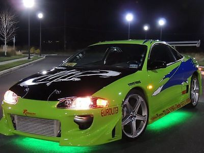
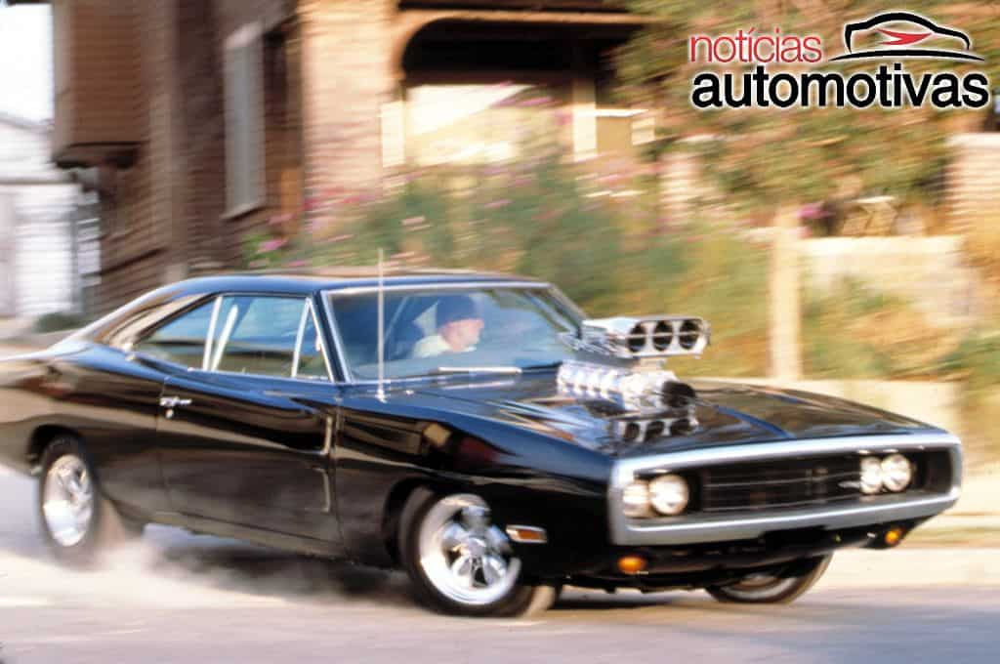
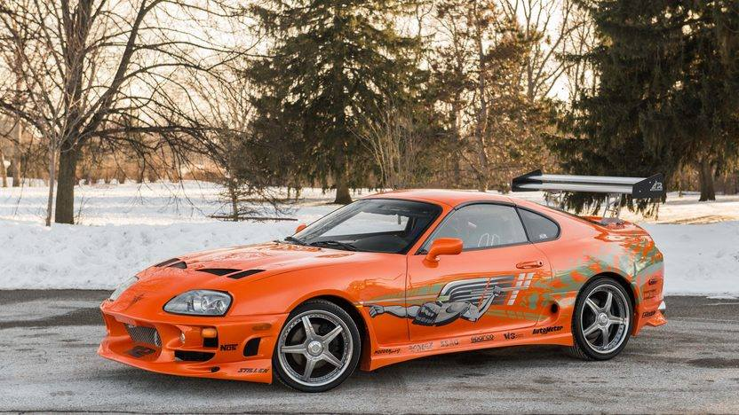

CARROS
Mitsubishi Eclipse
 "ECLIPSE" como não se lembrar dessa palavra escrito de fora-a-fora
(ou de lanter-a-lanterna) nesse carro. Na história da saga, esse é o primeiro
e não menos importante carro do Brian. É perdendo ele em uma aposta de corrida
que o personagem começa a se envolver com a familia de Toreto.
Dodge Charger R/T
Ah! O Icônico Dójão Americano carro que é a cara dos ESTADOS UNIDOS
Escolhido acertadamente pela equipe de produção, o Charger RT representa todo uma classe de carros
conhecidos como "Muscle Cars", carros com
muita força, robustez e pouquíssima tecnologia, um verdadeiro Neanderthal.
Toyota Supra
Por último mas não menos importante, o tão aclamado Supra
ao decorrer da história
O protagonista precisa de um novo carro, e escolhe o que talves seja o carro com o melhor motor
ja feito na história automobolística,
o famoso motor 2JZ GTE
Para os amantes de carros, aqui vai algumas informações legais:
| Modelo do carro | Marca | Motorizaçao | Horsepower |
|---|---|---|---|
| Eclipse | Mitsubishi | 2.0 I4 Turbo | 214hp |
| Charger R/T | Dodge | V8 HEMI | 363hp |
| Supra | Toyota | 2JZ GTE | 210hp |